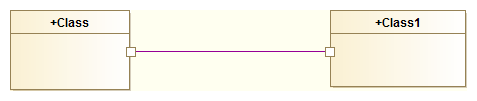
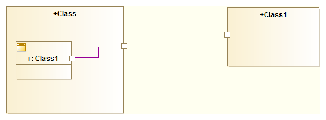

There cannot be any direct Connectors between two Class Ports.
The following is not allowed:

The UML specification states:
The ConnectableElements attached as roles to each ConnectorEnd owned by a Connector must be roles of the Classifier that owned the Connector, or they must be ports of such roles.
Do this instead:
